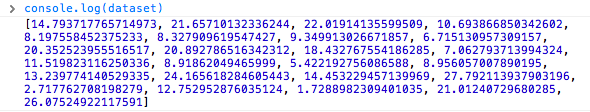
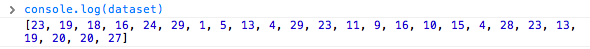

Мы остановились на простой столбиковой диаграмме, нарисованной с помощью div'ов и сгенерированной из нашего простого набора данных:
var dataset = [ 5, 10, 15, 20, 25 ];
Это великолепно, но в реальном мире данные редко представлены как этот график. Давайте изменим наши данные:
var dataset = [ 25, 7, 5, 26, 11 ];
Мы не ограничены пятью значениями нашего набора данных. Давайте добавим больше!
var dataset = [ 25, 7, 5, 26, 11, 8, 25, 14, 23, 19, 14, 11, 22, 29, 11, 13, 12, 17, 18, 10, 24, 18, 25, 9, 3 ];
25 значений вместо пяти! Как же D3 автоматически расширит наш график?
d3.select("body").selectAll("div")
.data(dataset) // <-- The answer is here!
.enter()
.append("div")
.attr("class", "bar")
.style("height", function(d) {
var barHeight = d * 5;
return barHeight + "px";
});
Дадите методу data() десять значений, и он пройдется по десяти значениям. Дадите ему миллион значений - он пройдется по миллиону значениям(только будьте терпеливы).
Именно в этом и есть сила метода data() - быть достаточно умным, чтобы обрабатывать все значения любого набора данных, который вы передаете в метод. Каждому методу, который будет выполняться после вызова data() в цепочке вызовов, будет передаваться параметр d, который будет ссылаться на текущее значение в наборе данных. И так для всего набора данных!
Понять это может быть затруднительно, и если до сих пор для вас это не кажется очень полезным - вы измените свою точку зрения. Я призываю вас сохранить код предыдущей HTML-страницы выше, подправить значения набора данных и проследить, как наш график меняется.
Помните, что данные управляют визуальными образами, а не наоборот.
Иногда бывает весело сгенерировать случайные данные для целей тестирования или если вы полный задрот. Вот то, о чем я говорю. Заметьте, что каждый раз при обновлении страницы, столбики имеют разную высоту.
Если вы загляните в исходники страницы, вы увидите такой код:
var dataset = []; //Initialize empty array
for (var i = 0; i < 25; i++) { //Loop 25 times
var newNumber = Math.random() * 30; //New random number (0-30)
dataset.push(newNumber); //Add new number to array
}
Этот код не использует каких-либо D3 методов; это простой JavaScript. Без погружения в детали, этот код:
Просто для прикола, откройте JavaScript консоль и введите console.log(dataset). Вы должны увидеть массив, состоящий из 25 случайных чисел.
Заметьте, что все числа в десятичном формате или в формате с плавающей запятой, а не целые числа, к которым мы привыкли изначально. Для этого примера десятичные значения подходят, но если вам когда-нибудь понадобится целое число, то можно использовать метод Math.round(). Например, вы можете обвернуть случайно сгенерированное число из кода:
var newNumber = Math.random() * 30;
как показано ниже:
var newNumber = Math.round(Math.random() * 30);
Можете посмотреть результат тут, и используя консоль, проверить что теперь числа в массиве все целые.
Дальше мы будет расширять наши возможности визуализации с использованием SVG.
Автор перевода Иванов Сергей. 2014 год